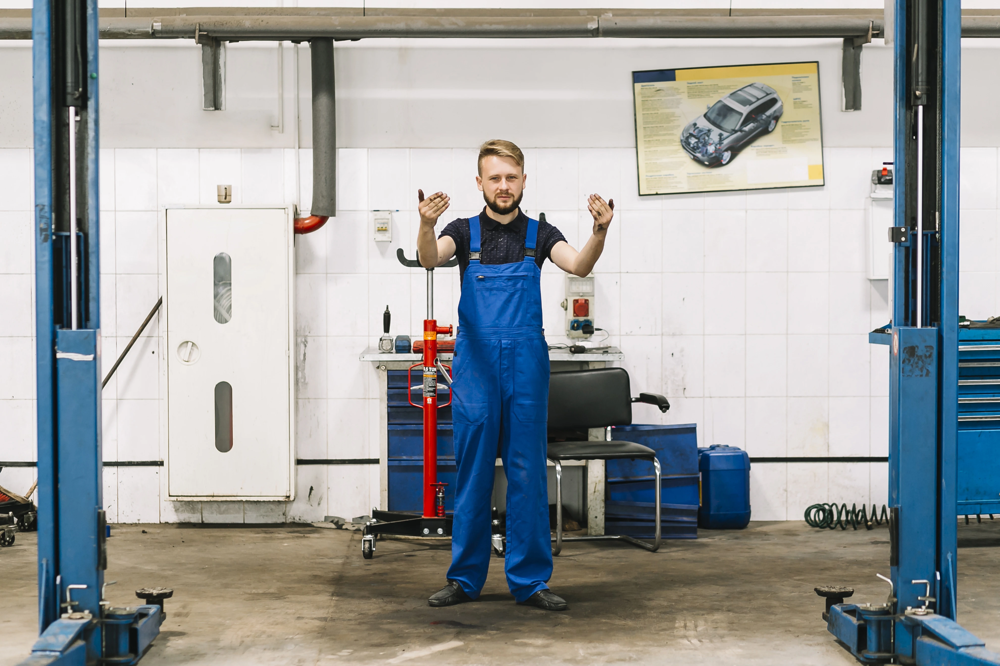

Fixe Daten statt vager Aussagen
Wir geben klare Termine durch und melden offen zurück, wenn etwas länger dauert als zuerst gedacht.

Wir wollen keine unnötig komplizierte Werkstatt sein, sondern eine Garage, auf die man sich im Alltag verlassen kann. Transparent, direkt, fair und mit sauberer Planung rund um Ihr Fahrzeug.

Swiss Repairs steht für einen Werkstattservice, der sich am echten Alltag der Kundinnen und Kunden orientiert. Fahrzeuge sollen nicht unnötig herumstehen, Termine sollen eingehalten werden und Rückmeldungen sollen ehrlich sein.
Genau darauf legen wir Wert: klare Kommunikation, saubere Ausführung, faire Einschätzungen und Lösungen, die technisch sinnvoll und preislich nachvollziehbar bleiben.
Wir geben klare Termine durch und melden offen zurück, wenn etwas länger dauert als zuerst gedacht.
Wir möchten Lösungen anbieten, die technisch sinnvoll sind und preislich nachvollziehbar bleiben.
Ob Service, Reparatur, Karosserie oder Reifenservice: Wir arbeiten sorgfältig und mit Blick aufs Detail.
Sie erhalten keine unnötig komplizierten Antworten, sondern eine klare Einschätzung zum Fahrzeug und zum Aufwand.
Wir hören zuerst sauber zu und klären, worum es bei Ihrem Fahrzeug konkret geht.
Danach schauen wir den Zustand an und geben eine ehrliche Einschätzung zum weiteren Vorgehen.
Wir sprechen sauber ab, wann gearbeitet wird und was zeitlich oder technisch zu erwarten ist.
Sie erhalten eine klare Rückmeldung zur Fertigstellung und zur ausgeführten Arbeit.
Mit Swiss Rent a Car besteht ein direkter Bezug zu flexibler Mobilität, Ersatzfahrzeugen und kundenorientierten Lösungen rund ums Auto. Genau dieser Anspruch fliesst auch in unsere Werkstattarbeit ein: pragmatisch, zuverlässig und serviceorientiert.
Swiss Rent a Car in Kloten steht für flexible Mobilität, Vermietung, Transfers und zuverlässigen Service. Dieser Anspruch an Erreichbarkeit und saubere Kundenbetreuung passt auch zu Swiss Repairs.
Anfrage sendenSie möchten einen Termin vereinbaren oder eine ehrliche Einschätzung zu Service, Reparatur oder MFK? Dann kontaktieren Sie uns und wir melden uns schnell, klar und unkompliziert zurück.